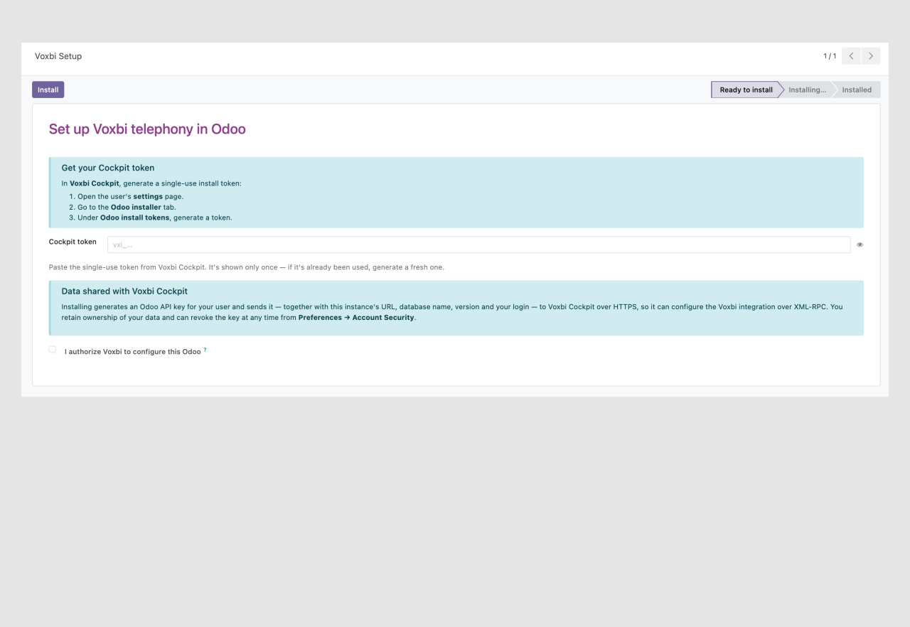
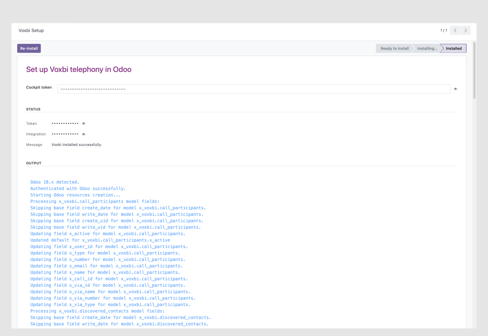

Voxbi is a cloud phone system with a native VoIP integration for Odoo. Paste an API key from Voxbi Cockpit, click Install, and Voxbi configures the integration for you.
Odoo Community and Enterprise · Odoo Online, Odoo.sh, and self-hosted · Hosted in the European Union
About Voxbi
Voxbi is a cloud-based phone system, hosted in the European Union. It replaces on-premises PBX hardware with a web app you can run from any browser, plus a native Windows desktop app and mobile apps for iOS and Android.
Your team manages users, call routing, queues, and live analytics from one browser tab: Voxbi Cockpit. Voxbi is built and supported by Mixvoip, a Luxembourg telecom operator building European telecom since 2008, and a Gold sponsor of the Odoo Community Association.
businesses served across 26 countries
building telecom in Europe since
users on the same platform
Calls, recordings, and metadata stay in European Union data centers. GDPR and EU AI Act compliance are built into the platform, and every call is protected with encryption over HTTPS, SIP TLS, and WebRTC. Call transcription and summaries run on Voxbi's own infrastructure in Luxembourg.
What you get in Odoo
Every inbound and outbound call is saved to the caller's chatter with time, duration, direction, and who handled it.
One click on a contact, lead, or quote and your softphone or desk phone places the call.
See the caller's name, company, last calls, tickets, and activities from Odoo while the phone is still ringing.
Each call lands on the right record with a transcript, a short summary, a topic, and keywords. The AI runs on Voxbi's own infrastructure in Luxembourg.
Caller information from Odoo shows on desk phones too, and calls from mobile devices are logged as well.
Calls from numbers Odoo does not know are still logged, with a prompt to create the contact.
What this app does
Connecting a phone system to your business software usually means raising a ticket, sharing credentials, and waiting on a vendor to wire it up.
This app adds a Voxbi → Configuration wizard to your Odoo backend. You paste an API key created in Voxbi Cockpit and click Install. The wizard registers this Odoo with Voxbi Cockpit, which then installs and configures the Voxbi integration for your database, with progress streaming back into the wizard as it happens.
Key features
No Odoo passwords to type or share. Create an API key with the "Is Odoo Installer" scope in Voxbi Cockpit, paste it, and install.
The wizard polls the install status and shows a color-coded log console, so you can watch the provisioning happen step by step.
Opt in to push SIP settings into Odoo's VoIP module after install, or keep your existing VoIP configuration untouched.
The setup wizard is restricted to Settings administrators. Connection identifiers are masked in the UI by default.
How it works


External service & data sharing
This app requires Voxbi Cockpit, an external service operated by VOXBI S.A., to provision the Voxbi integration. When you click Install, the app asks for your explicit authorization and then sends the following to Voxbi Cockpit over an encrypted (HTTPS) connection:
The generated Odoo API key can be revoked at any time from the administrator's Preferences → Account Security. You retain full ownership of your data. A Voxbi account and an active Voxbi subscription are required to use this integration. See the privacy policy.
Support
Contact us at hello@voxbi.com. A real person on our team replies within one business day, Monday to Friday.